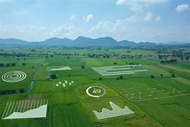

Horta Escolar Sustentável
Em muitas escolas urbanas, alunos estão criando hortas sustentáveis dentro do ambiente escolar. Com a orientação de agricultores da comunidade, os estudantes aprendem, na prática, como cultivar hortaliças, entender o ciclo dos alimentos e respeitar o tempo da natureza. Além de promover hábitos saudáveis, essas hortas conectam a cidade ao saber do campo e despertam o senso de responsabilidade ambiental desde cedo.

Conectividade no Campo
A internet chegou ao campo e está mudando a vida dos produtores rurais. Com acesso à conectividade, os agricultores podem utilizar aplicativos de previsão do tempo, participar de cursos à distância, controlar sistemas de irrigação automatizados e comercializar seus produtos diretamente com clientes das cidades. Essa ponte digital encurta distâncias e coloca o campo no centro da inovação tecnológica.

Turismo Educativo
Estudantes da cidade visitam propriedades rurais para aprender sobre produção de leite, plantio, manejo de animais e sustentabilidade.